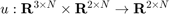

create_unicycle_position_controller
Returns a unicycle model position controller () given parameters
Contents
Detailed Description
- LinearVelocityGain - a gain for the produced unicycle linear velocity
- AngularVelocityGain - a gain for the produced unicycle angular velocity
Example Usage
controller = create_unicycle_position_controller('PositionErrorGain', 2) controller = create_unicycle_position_controller('RotationErrorGain', 1, 'PositionErrorGain, 2')
Implementation
function [ created_position_controller ] = create_unicycle_position_controller(varargin) p = inputParser; addOptional(p, 'LinearVelocityGain', 1); addOptional(p, 'AngularVelocityGain', 1); parse(p, varargin{:}) linear_velocity_gain = p.Results.LinearVelocityGain; angular_velocity_gain = p.Results.AngularVelocityGain; created_position_controller = @position_uni_clf; function [ dxu ] = position_uni_clf(states, poses) %POSITIONCLF Utilizes a Controlled Lyapunov Function (CLF) to drive a %unicycle system to a desired position % This function operates on unicycle states and desired poses and returns % a unicycle-velocity-valued vector. [M_states, N_states] = size(states); [M_poses, N_poses] = size(poses); assert(M_states == 3, 'Row size of states vector must be 3! Given size is %i', M_states); assert(M_poses == 2, 'Row size of desired poses (%i) must be 2!', M_poses); assert(N_states == N_poses, 'Row size of states vector (%i) must be row size of desired poses (%i)', N_states, N_poses); dxu = zeros(2, N); for i = 1:N pos_error = poses(:, i) - states(1:2, i); rot_error = atan2(pos_error(2), pos_error(1)); dist = norm(pos_error); dxu(1, i) = linear_velocity_gain*dist*cos(rot_error - states(3, i)); dxu(2, i) = angular_velocity_gain*dist*sin(rot_error - states(3, i)); end end end